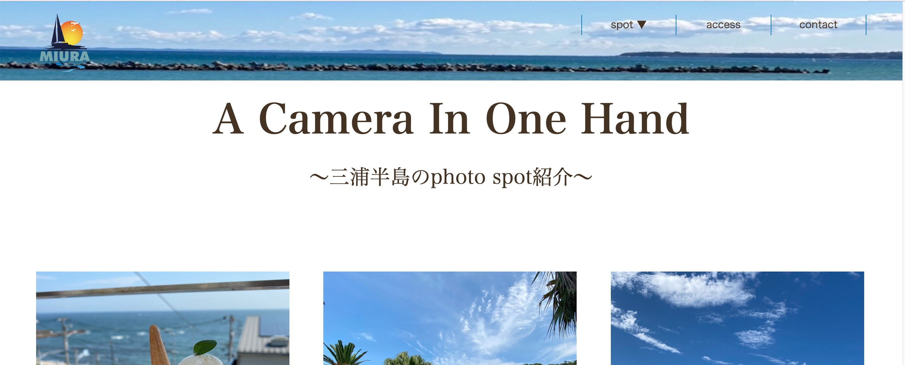
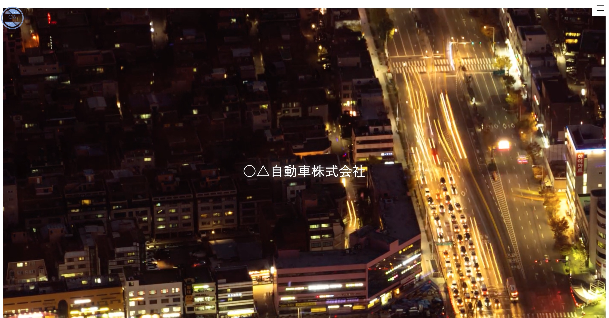

ABOUT
自己紹介
- ♦︎名前：Ayaka
- ♦︎出身：神奈川県
- ♦︎学習内容：HTML/CSS/JavaScript
- ♦︎エンジニアを目指す理由
前職ではスキルアップの限界を感じていました。また、pcで企画書の作成等何かしらを制作することが仕事をする上で得意であることと実感していました。
そのような時にwebディレクターという職種を薦められる機会があり、web業界を調べていくうちにエンジニア職に興味が湧いたので勉強を始めてみました。
もともと気になったことはすぐに調べる私にとって、本やインターネットで調べながらの勉強・制作は苦にはならず、それどころか奥の深さに驚き、
同時にもっと知りたいという想いが強くなったことをきっかけにエンジニアを目指すようになりました。
WORKS
制作物

[三浦半島のおすすめフォトスポット]
- ●制作時間：100時間
- ●苦労した点
- ある程度基礎を本で勉強した後、インターネットや本で一つ一つ調べながら初めて0からwebサイトを制作しました。
参考にするコードを持ってきても、自分のサイトでは上手く表示されないことがほとんどで、初めのうちは大変苦戦しましたが、
次第に修正点を見つけることも少しずつ慣れていきました。特にメディアクエリやメニューバーの実装に苦戦しました。

[会社HP(自動車)]
- ●制作時間：30時間
- ●苦労した点
- このwebサイトでは、特に背景動画の挿入に苦戦しました。また、誰が見ても分かりやすいようにシンプルなデザインを心掛けました。
[模写制作(会社HP)]
- もとサイト：https://danblog.tokyo/
- ●制作時間：時間
- ●苦労した点
- このwebサイトでは、特に背景動画の挿入に苦戦しました。また、誰が見ても分かりやすいようにシンプルなデザインを心掛けました。